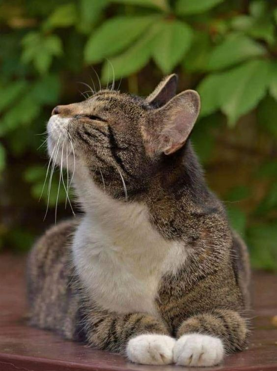
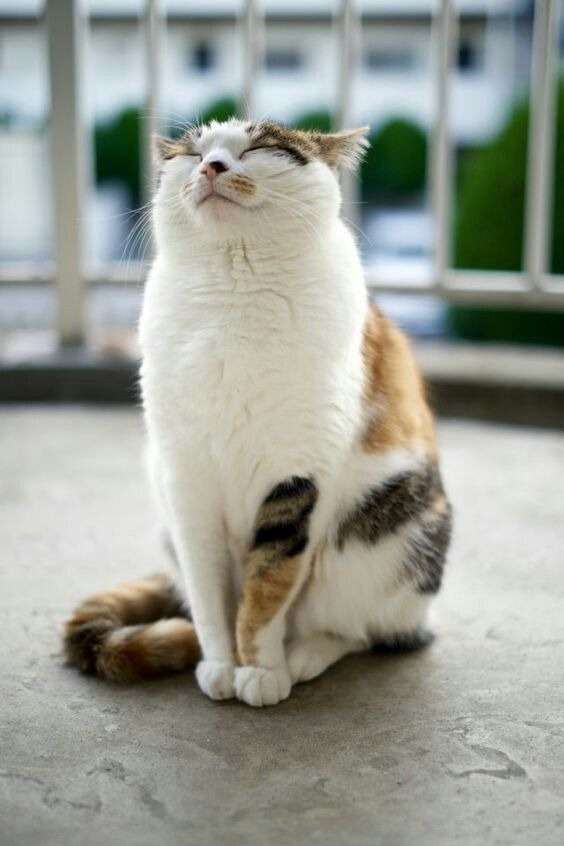
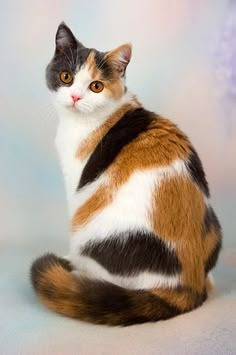

Nuestros Pillos favoritos
gato de pelaje atigrado/"tabby"

Tamaño: generalmente pesan entre 3.5 y 7 kg, aunque esto puede variar dependiendo de la raza y su alimentación.Miden aproximadamente entre 23 y 30 cm de altura hasta los hombros
Carácter :los gatos atigrados tienden a ser sociables y apegados a sus dueños. Les encanta interactuar, aunque mantienen la independencia típica de los gatos.
Cuidados: Deben ser alimentados con una dieta balanceada que incluya proteínas de alta calidad, y dependiendo de su peso y edad, es importante controlar las porciones para evitar la obesidad.
gato común europeo

Tamaño: Podría estar en el mismo rango general, entre 3.5 y 7 kg, dependiendo de su tamaño y raza exacta.con una altura de entre 23 y 30 cm
Carácter: este gato tiene una expresión muy tranquila y parece disfrutar de su entorno. Esto podría sugerir que es un gato de temperamento calmado y relajado, aunque los gatos son conocidos por sus momentos de actividad inesperada.
Cuidados: Mantener una dieta equilibrada con proteínas de calidad es esencial. Es probable que, si tiene un estilo de vida más sedentario (como parece sugerir la foto), haya que controlar su ingesta de alimentos para evitar el sobrepeso.
gato de pelaje tricolor o calicó

Tamaño: Al igual que los anteriores, este gato podría pesar entre 3.5 y 7 kg, dependiendo de su alimentación y genética, con una altura de entre 23 y 30 cm
Carácter: Este gato tiene una apariencia tranquila y elegante, lo que podría sugerir que es calmado, pero los gatos calicó son conocidos por tener personalidades únicas y a veces fuertes.Los calicó suelen ser bastante independientes, pero también buscan afecto y se apegan a sus dueños
Cuidados: Es importante proporcionarle una dieta equilibrada que incluya las proteínas necesarias. Controlar la cantidad de comida será clave para mantener un peso saludable.